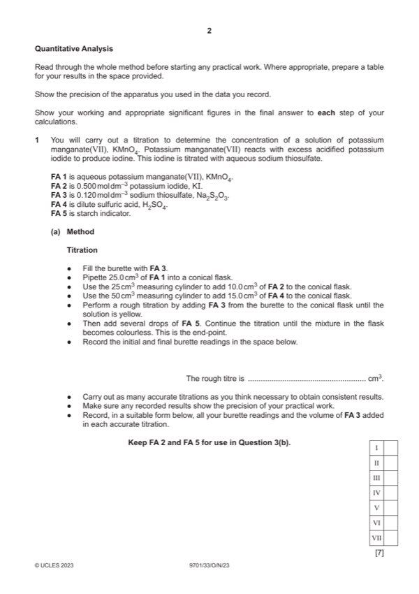
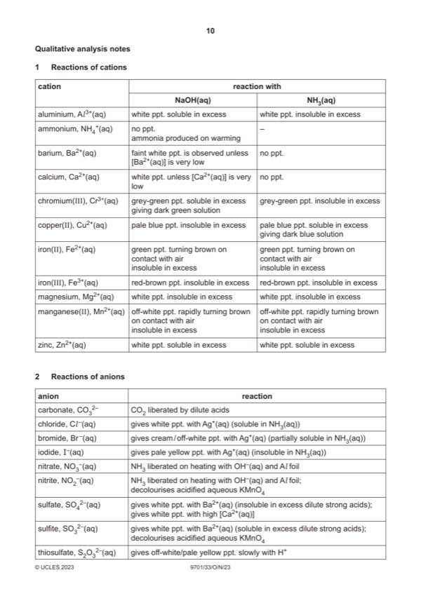

Question 1

Original paper page 2

Original paper page 10
Part 1(a) — solution
- two burette readings and titre for the rough titration
- initial and final burette readings for two (or more) accurate titrations
- initial / start and (burette) reading/volume
- final / end and (burette) reading/volume
- titre or volume / FA 3 and used / added
- unit: / cm3 or (cm3) or in cm3 (for each heading)
- two (or more) accurate identical titres (ignoring any that are labelled ‘rough’), then
- two (or more) accurate titres within 0.05 cm3, then
- two (or more) accurate titres within 0.10 cm3, etc
Mark points
- two burette readings and titre for the rough titration
- initial and final burette readings for two (or more) accurate titrations
- initial / start and (burette) reading/volume
- final / end and (burette) reading/volume
- titre or volume / FA 3 and used / added
- unit: / cm3 or (cm3) or in cm3 (for each heading)
- two (or more) accurate identical titres (ignoring any that are labelled ‘rough’), then
- two (or more) accurate titres within 0.05 cm3, then
- two (or more) accurate titres within 0.10 cm3, etc
Part 1(b) — solution
- Candidate must take the average of two (or more) titres that are within a total spread of not more than 0.20 cm3
- Working/explanation must be shown or ticks must be shown next to the two (or more) accurate readings selected
- The mean should be quoted to 2 dp, and be rounded correctly to nearest 0.01 cm3
- Allow a mean expressed to 1 dp, if all accurate burette readings were given to 1 dp and the mean is exactly correct
Mark points
- Candidate must take the average of two (or more) titres that are within a total spread of not more than 0.20 cm3
- Working/explanation must be shown or ticks must be shown next to the two (or more) accurate readings selected
- The mean should be quoted to 2 dp, and be rounded correctly to nearest 0.01 cm3
- Allow a mean expressed to 1 dp, if all accurate burette readings were given to 1 dp and the mean is exactly correct
Part 1(c)(i) — solution
All answers to parts (c)(ii), (c)(iii) and (c)(iv) quoted to 3 or 4 significant figures (sf). 1
Mark points
- Include the ideas shown in the solution above.
Part 1(c)(ii) — solution
- Correct calculation of no of moles of Na2S2O3 1
- No of moles = 0.120 mean titre/1000
Mark points
- Correct calculation of no of moles of Na2S2O3 1
- No of moles = 0.120 mean titre/1000
Part 1(c)(iii) — solution
- [M1] amount of KMnO4 in 25 cm3 FA 1 = 0.2 (c)(ii) mol
- [M2] Concn of KMnO4 = 40 0.2 (c)(ii) = 8 (c)(ii) mol dm–3
Mark points
- [M1] amount of KMnO4 in 25 cm3 FA 1 = 0.2 (c)(ii) mol
- [M2] Concn of KMnO4 = 40 0.2 (c)(ii) = 8 (c)(ii) mol dm–3
Part 1(c)(iv) — solution
- Volume of FA 1 = 50/158 1/(c)(iii)
Mark points
- Volume of FA 1 = 50/158 1/(c)(iii)
Part 1(d) — solution
No and FA 2 is used in excess (so exact volume is not important) 1
2023 Page 6 of 10
9701/33 Cambridge International AS & A Level – Mark Scheme October/November 2023
Mark points
- Include the ideas shown in the solution above.
Part 1 — solution
mark 1.0 1.5 2.0 2.5 3.0
Mark points
- Include the ideas shown in the solution above.